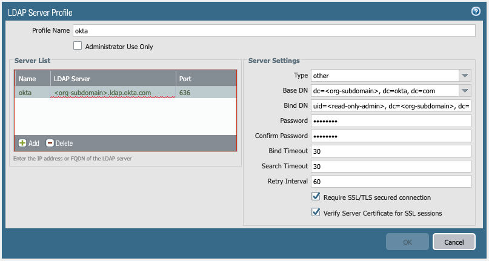
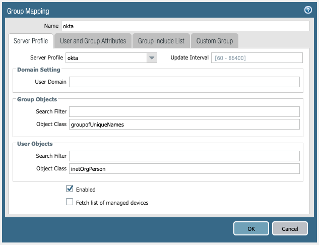
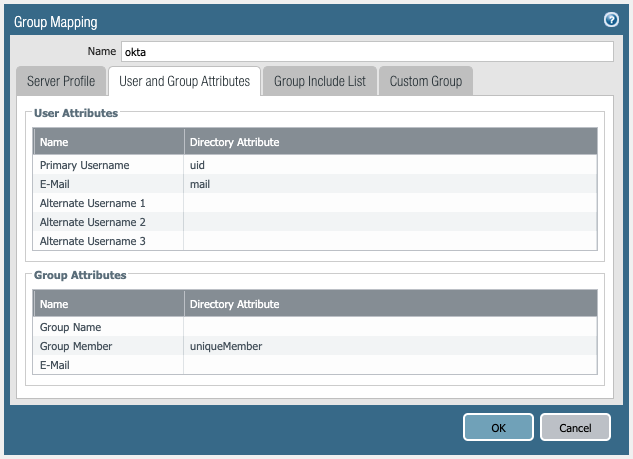

PAN-OS LDAP Integration with Okta for Group Mapping
Okta can be queried for group mapping information using LDAP. At the time of writing, the Okta documentation is here: Connecting to Okta using the LDAP Interface. Configuration settings in this post were all tested and working with PAN-OS 9.0.2 and Okta's production admin GUI on 8th July 2019.
The Okta "LDAP Interface" is enabled in the Okta admin GUI from Directory -> Directory Integrations -> Add LDAP Interface. Once enabled, connection settings are presented to the administrator.
Server/Host: {{org-subdomain>.ldap.okta.com
Port: tcp/636 using LDAPS
Base DN: dc={{org-subdomain}}, dc=okta, dc=com
User Base DN: ou=users, dc={{org-subdomain}}, dc=okta, dc=com
Group Base DN: ou=groups, dc={{org-subdomain}}, dc=okta, dc=com
Bind DN: uid={{read-only-admin-account}}, dc={{org-subdomain}}, dc=okta, dc=com
Bind Password: Password for {{read-only-admin-account>
The {{org-subdomain}} comes from your tenant (if you connect to example.okta.com then your LDAP host is example.ldap.okta.com). Note that your tenant may not be on okta.com, but instead be on another domain such as oktapreview.com or okta-emea.com, so amend accordingly.
The {{read-only-admin-account}} is an account which must be designated at least "Read Only Administrator" privileges in order to perform an LDAP bind. Go to Security -> Administrators in the Okta admin GUI to manage account administrative privileges.
When configuring an LDAP Server Profile in PAN-OS, the following configuration gives direction to your Okta tenant, using the settings listed above:

When configuring User-ID Group Mapping in PAN-OS, using the LDAP Server Profile configured in the previous step, the following configuration will retrieve group membership from Okta:
Group Objects -> Object Class: groupofUniqueNames
User Objects -> Object Class: inetOrgPerson
User Attributes -> Primary Username: uid
User Attributes -> Email: mail
Group Attributes -> Group Member: uniqueMember


The following PAN-OS CLI commands are useful during testing.
Refresh the group mapping, after making changes to PAN-OS config or after amending users and group membership in the directory:
debug user-id refresh group-mapping all
debug user-id refresh group-mapping group-mapping-name "cn={{group-name}},ou=groups,dc={{org-subdomain}},dc=okta,dc=com"
List all the groups ingested by PAN-OS:
show user group list
List the members of a group:
show user group name "cn={{group-name}},ou=groups,dc={{org-subdomain}},dc=okta,dc=com"
--- home --- twitter --- linkedin ---